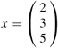
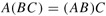
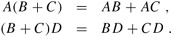
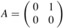
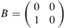
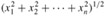
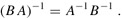
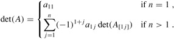

|
|
< Day Day Up > |
|
In this section, we review some basic concepts of matrix theory and some fundamental properties of matrices, focusing on those that will be needed in later sections.
A matrix is a rectangular array of numbers. For example,
is a 2 × 3 matrix A = (aij), where for i = 1, 2 and j = 1, 2, 3, the element of the matrix in row i and column j is aij. We use uppercase letters to denote matrices and corresponding subscripted lowercase letters to denote their elements. The set of all m × n matrices with real-valued entries is denoted Rm×n. In general, the set of m × n matrices with entries drawn from a set S is denoted Sm×n.
The transpose of a matrix A is the matrix AT obtained by exchanging the rows and columns of A. For the matrix A of equation (28.1),
A vector is a one-dimensional array of numbers. For example,
| (28.2) |  |
is a vector of size 3. We use lowercase letters to denote vectors, and we denote the ith element of a size-n vector x by xi , for i = 1, 2, . . . , n. We take the standard form of a vector to be as a column vector equivalent to an n × 1 matrix; the corresponding row vector is obtained by taking the transpose:
xT = (2 3 5).
The unit vector ei is the vector whose ith element is 1 and all of whose other elements are 0. Usually, the size of a unit vector is clear from the context.
A zero matrix is a matrix whose every entry is 0. Such a matrix is often denoted 0, since the ambiguity between the number 0 and a matrix of 0's is usually easily resolved from context. If a matrix of 0's is intended, then the size of the matrix also needs to be derived from the context.
Square n × n matrices arise frequently. Several special cases of square matrices are of particular interest:
A diagonal matrix has aij = 0 whenever i ≠ j. Because all of the off-diagonal elements are zero, the matrix can be specified by listing the elements along the diagonal:
The n × n identity matrix In is a diagonal matrix with 1's along the diagonal:
When I appears without a subscript, its size can be derived from context. The ith column of an identity matrix is the unit vector ei.
A tridiagonal matrix T is one for which tij = 0 if |i - j| > 1. Nonzero entries appear only on the main diagonal, immediately above the main diagonal (ti,i+1 for i = 1, 2, . . . , n - 1), or immediately below the main diagonal (ti+1,i for i = 1, 2, . . . , n - 1):
An upper-triangular matrix U is one for which uij = 0 if i > j. All entries below the diagonal are zero:
An upper-triangular matrix is unit upper-triangular if it has all 1's along the diagonal.
A lower-triangular matrix L is one for which lij = 0 if i < j. All entries above the diagonal are zero:
A lower-triangular matrix is unit lower-triangular if it has all 1's along the diagonal.
A permutation matrix P has exactly one 1 in each row or column, and 0's elsewhere. An example of a permutation matrix is
Such a matrix is called a permutation matrix because multiplying a vector x by a permutation matrix has the effect of permuting (rearranging) the elements of x.
A symmetric matrix A satisfies the condition A = AT. For example,
is a symmetric matrix.
The elements of a matrix or vector are numbers from a number system, such as the real numbers, the complex numbers, or integers modulo a prime. The number system defines how to add and multiply numbers. We can extend these definitions to encompass addition and multiplication of matrices.
We define matrix addition as follows. If A = (aij) and B = (bij) are m × n matrices, then their matrix sum C = (cij) = A + B is the m × n matrix defined by
for i = 1, 2, . . . , m and j = 1, 2, . . . , n. That is, matrix addition is performed componentwise. A zero matrix is the identity for matrix addition:
|
A + 0 |
= |
A |
|
= |
0 + A. |
If λ is a number and A = (aij) is a matrix, then λA = (λaij) is the scalar multiple of A obtained by multiplying each of its elements by λ. As a special case, we define the negative of a matrix A = (aij) to be -1 · A = - A, so that the ijth entry of -A is -aij. Thus,
|
A + (-A) |
= |
0 |
|
= |
(-A) + A. |
Given this definition, we can define matrix subtraction as the addition of the negative of a matrix: A - B = A + (-B).
We define matrix multiplication as follows. We start with two matrices A and B that are compatible in the sense that the number of columns of A equals the number of rows of B. (In general, an expression containing a matrix product AB is always assumed to imply that matrices A and B are compatible.) If A = (aij) is an m × n matrix and B = (bjk) is an n × p matrix, then their matrix product C = AB is the m × p matrix C = (cik), where
for i = 1, 2, . . . , m and k = 1, 2, . . . , p. The procedure MATRIX-MULTIPLY in Section 25.1 implements matrix multiplication in the straightforward manner based on equation (28.3), assuming that the matrices are square: m = n = p. To multiply n × n matrices, MATRIX-MULTIPLY performs n3 multiplications and n2(n - 1) additions, and so its running time is Θ(n3).
Matrices have many (but not all) of the algebraic properties typical of numbers. Identity matrices are identities for matrix multiplication:
Im A = AIn = A
for any m × n matrix A. Multiplying by a zero matrix gives a zero matrix:
A 0 = 0.
Matrix multiplication is associative:
| (28.4) |  |
for compatible matrices A, B, and C. Matrix multiplication distributes over addition:
| (28.5) |  |
For n > 1, multiplication of n × n matrices is not commutative. For example, if  and , then
and
Matrix-vector products or vector-vector products are defined as if the vector were the equivalent n × 1 matrix (or a 1 × n matrix, in the case of a row vector). Thus, if A is an m × n matrix and x is a vector of size n, then Ax is a vector of size m. If x and y are vectors of size n, then
is a number (actually a 1 × 1 matrix) called the inner product of x and y. The matrix xyT is an n×n matrix Z called the outer product of x and y, with zij = xi yj. The (euclidean) norm ∥x∥ of a vector x of size n is defined by
|
∥x∥ |
= |
 |
|
= |
(xTx)1/2. |
Thus, the norm of x is its length in n-dimensional euclidean space.
We define the inverse of an n × n matrix A to be the n × n matrix, denoted A-1 (if it exists), such that AA-1 = In = A-1 A. For example,
Many nonzero n × n matrices do not have inverses. A matrix without an inverse is called noninvertible, or singular. An example of a nonzero singular matrix is
If a matrix has an inverse, it is called invertible, or nonsingular. Matrix inverses, when they exist, are unique. (See Exercise 28.1-3.) If A and B are nonsingular n × n matrices, then
| (28.6) |  |
The inverse operation commutes with the transpose operation:
(A-1)T = (AT)-1.
The vectors x1, x2, . . . , xn are linearly dependent if there exist coefficients c1, c2, . . . , cn, not all of which are zero, such that c1x1 + c2x2 + · · · + cn xn = 0. For example, the row vectors x1 = (1 2 3 ), x2 = (2 6 4), and x3 = (4 11 9) are linearly dependent, since 2x1 + 3x2 - 2x3 = 0. If vectors are not linearly dependent, they are linearly independent. For example, the columns of an identity matrix are linearly independent.
The column rank of a nonzero m × n matrix A is the size of the largest set of linearly independent columns of A. Similarly, the row rank of A is the size of the largest set of linearly independent rows of A. A fundamental property of any matrix A is that its row rank always equals its column rank, so that we can simply refer to the rank of A. The rank of an m × n matrix is an integer between 0 and min(m, n), inclusive. (The rank of a zero matrix is 0, and the rank of an n × n identity matrix is n.) An alternate, but equivalent and often more useful, definition is that the rank of a nonzero m × n matrix A is the smallest number r such that there exist matrices B and C of respective sizes m × r and r × n such that
A = BC.
A square n × n matrix has full rank if its rank is n. An m × n matrix has full column rank if its rank is n. A fundamental property of ranks is given by the following theorem.
A null vector for a matrix A is a nonzero vector x such that Ax = 0. The following theorem, whose proof is left as Exercise 28.1-9, and its corollary relate the notions of column rank and singularity to null vectors.
The ijth minor of an n × n matrix A, for n > 1, is the (n-1) × (n-1) matrix A[ij] obtained by deleting the ith row and jth column of A. The determinant of an n × n matrix A can be defined recursively in terms of its minors by
| (28.7) |  |
The term (-1)i+j det(A[ij]) is known as the cofactor of the element aij.
The following theorems, whose proofs are omitted here, express fundamental properties of the determinant.
The determinant of a square matrix A has the following properties:
If any row or any column of A is zero, then det(A) = 0.
The determinant of A is multiplied by λ if the entries of any one row (or any one column) of A are all multiplied by λ.
The determinant of A is unchanged if the entries in one row (respectively, column) are added to those in another row (respectively, column).
The determinant of A equals the determinant of AT.
The determinant of A is multiplied by -1 if any two rows (or any two columns) are exchanged.
Also, for any square matrices A and B, we have det(AB) = det(A) det(B).
Positive-definite matrices play an important role in many applications. An n × n matrix A is positive-definite if xT Ax > 0 for all size-n vectors x ≠ 0. For example, the identity matrix is positive-definite, since for any nonzero vector x = (x1 x2 · · · xn)T,
As we shall see, matrices that arise in applications are often positive-definite due to the following theorem.
For any matrix A with full column rank, the matrix AT A is positive-definite.
Proof We must show that xT(ATA)x > 0 for any nonzero vector x. For any vector x,
|
xT(ATA)x |
= |
(Ax)T(Ax) (by Exercise 28.1-2) |
|
= |
∥Ax∥2. |
Note that ∥Ax∥2 is just the sum of the squares of the elements of the vector Ax. Therefore, ∥Ax∥2 ≥ 0. If ∥Ax∥2 = 0, every element of Ax is 0, which is to say Ax = 0. Since A has full column rank, Ax = 0 implies x = 0, by Theorem 28.2. Hence, AT A is positive-definite.
Other properties of positive-definite matrices will be explored in Section 28.5.
Prove that matrix inverses are unique, that is, if B and C are inverses of A, then B = C.
Prove that the product of two lower-triangular matrices is lower-triangular. Prove that the determinant of a lower-triangular or upper-triangular matrix is equal to the product of its diagonal elements. Prove that the inverse of a lower-triangular matrix, if it exists, is lower-triangular.
Prove that if P is an n × n permutation matrix and A is an n × n matrix, then P A can be obtained from A by permuting its rows, and AP can be obtained from A by permuting its columns. Prove that the product of two permutation matrices is a permutation matrix. Prove that if P is a permutation matrix, then P is invertible, its inverse is PT, and PT is a permutation matrix.
Let A and B be n × n matrices such that AB = I. Prove that if A′ is obtained from A by adding row j into row i, then the inverse B′ of A′ can be obtained by subtracting column i from column j of B.
Let A be a nonsingular n × n matrix with complex entries. Show that every entry of A-1 is real if and only if every entry of A is real.
Show that if A is a nonsingular, symmetric, n × n matrix, then A-1 is symmetric. Show that if B is an arbitrary m × n matrix, then the m × m matrix given by the product B ABT is symmetric.
Prove Theorem 28.2. That is, show that a matrix A has full column rank if and only if Ax = 0 implies x = 0. (Hint: Express the linear dependence of one column on the others as a matrix-vector equation.)
|
|
< Day Day Up > |
|